Mining and Aggregates
Add temporary capacity during rainy seasons or increased production.
Learn More →Factory-supported temporary dewatering, anywhere in the United States.
PacPress rents filter presses and accessories for urgent mining, wastewater, food processing, environmental remediation, and industrial cleanup needs. Rental equipment is quoted around your process, location, and timeline.
A rental filter press is a temporary machine that separates solids from liquids using filter plates and pressure. It helps clean dirty water, recover solids, reduce hauling, or reuse clarified water without buying a permanent system.
PacPress rental systems are the same presses we manufacture, not third-party equipment, which means you get real factory support during your rental period.
Talk to a Specialist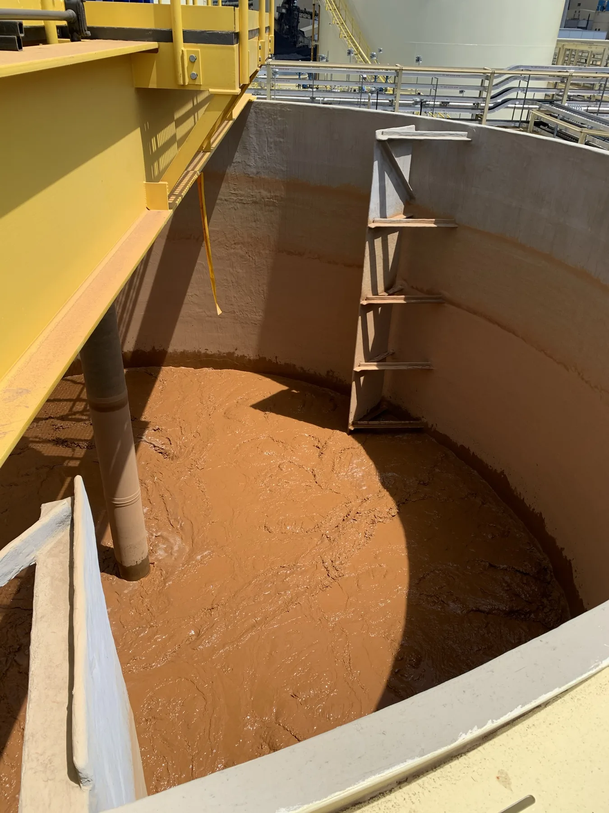
Filter cakes are pressed dry and discharged for easy handling and disposal.
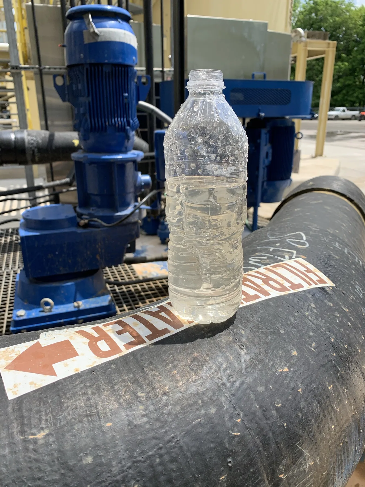
Filtrate exits clean, suitable for discharge, reuse, or further treatment.
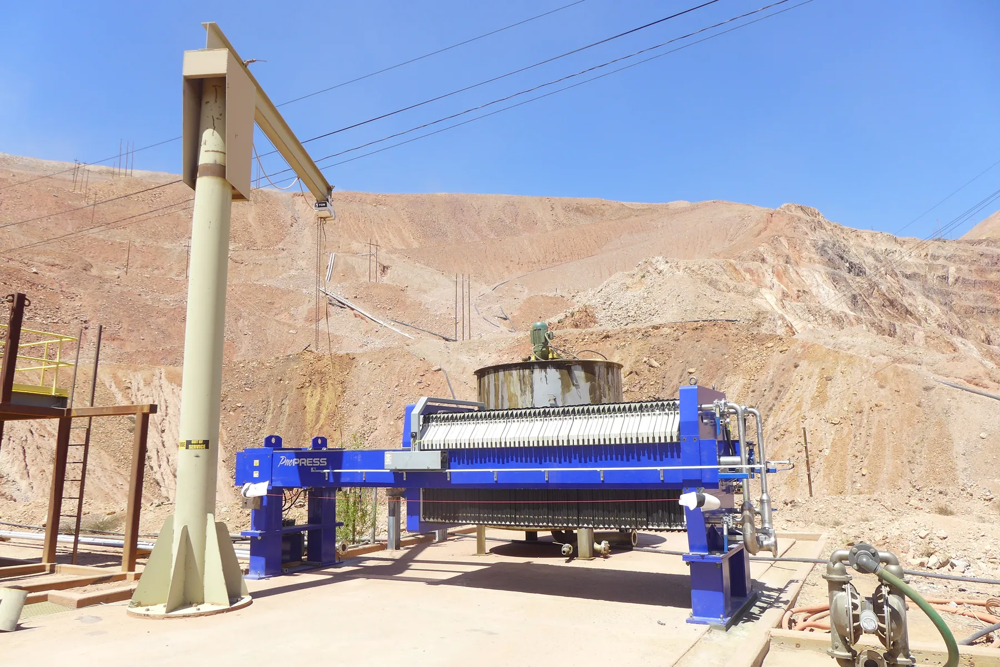
Deployed fast, removed when the project is done. No capital purchase required.
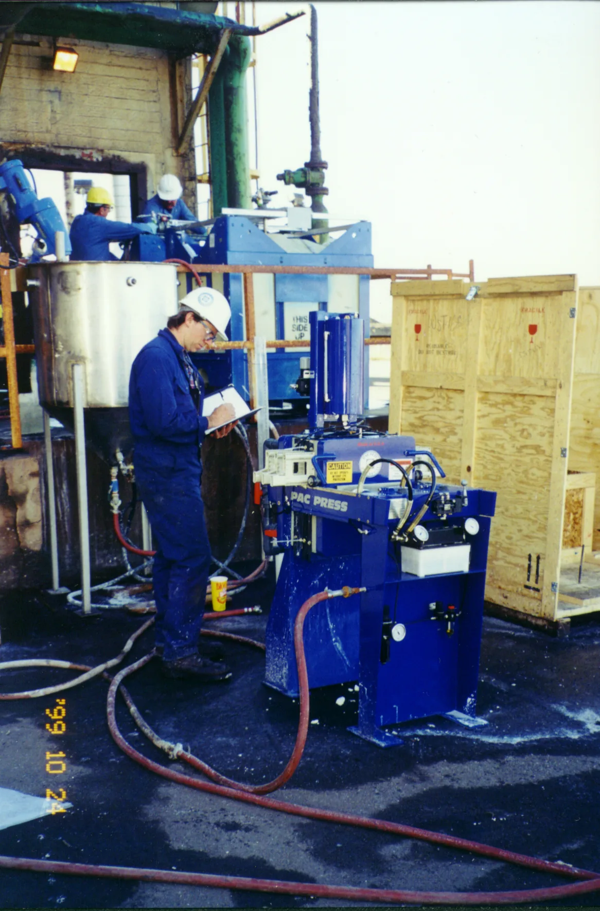
Backed by the manufacturer, not a rental broker. Real technical support available.
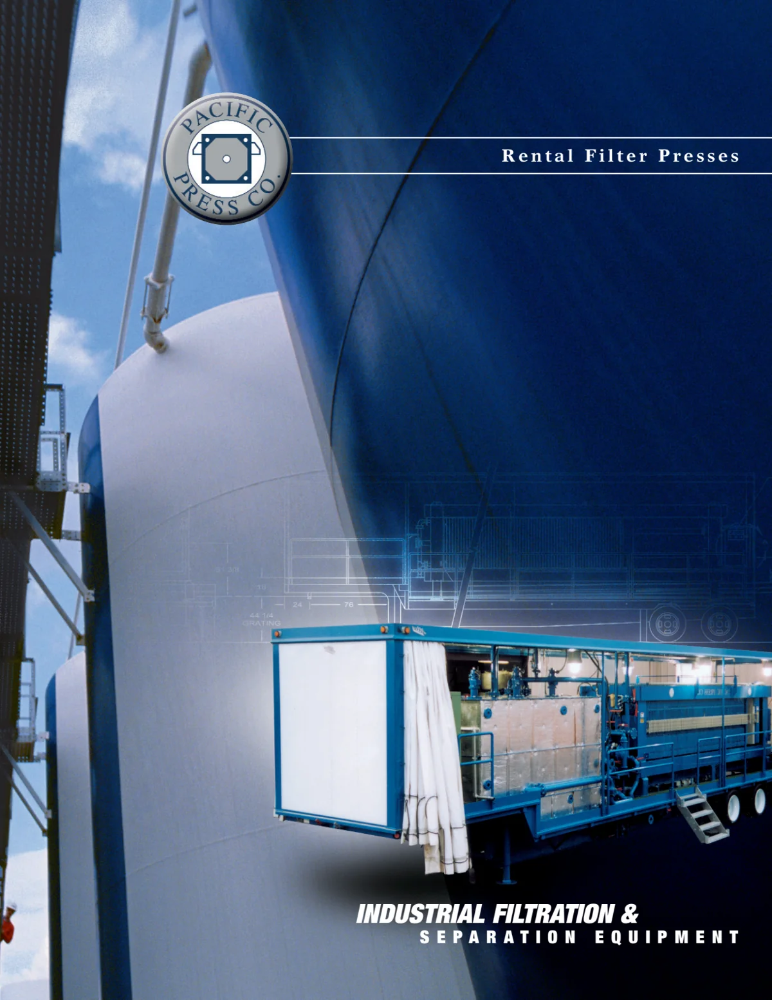
Rental Brochure
See rental filter press options, applications, and supporting equipment in the PacPress rental brochure. Save a copy for project planning or share it with your team.
For current availability and contact details, use the information on this website.
United States Rental Coverage
PacPress rents filter presses for urgent, temporary, and project-based dewatering needs across the United States. Rental systems can be configured with supporting pumps, tanks, hoses, and manufacturer-backed support.
Equipment availability, freight, and delivery timing are confirmed for each project location.
Ask About Availability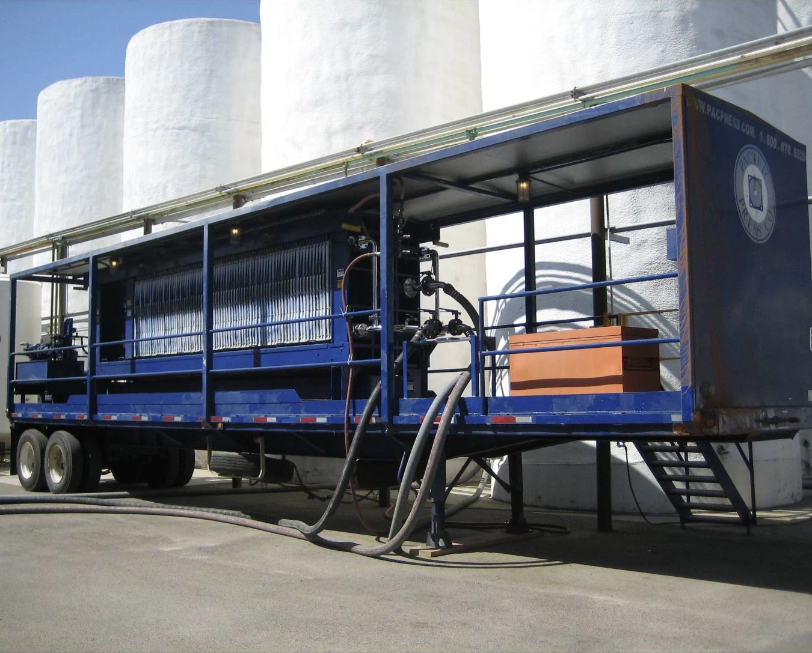
PacPress rental systems have been deployed across the United States for environmental, industrial, and municipal dewatering projects.
An 800 mm rental press processed 11,500 gallons per cycle during grape-crush season and helped the winery choose its permanent filtration system.
Read Full Story →A 90-day rental trial proved that accumulated runoff solids could be conditioned, captured, and discharged as a dry filter cake.
Read Full Story →Two 100 cu.ft. trailer presses operated around the clock for nearly a year while a decommissioned chemical site was remediated.
Read Full Story →A PacPress rental served for 24 months as the final solids-dewatering step during construction of Seattle's SR-99 tunnel.
Read Full Story →Rental filter presses are used wherever companies need temporary solids separation, water clarification, or dewatering capacity without buying a permanent system.
Add temporary capacity during rainy seasons or increased production.
Learn More →Remove solids or contaminants from site cleanup and drinking water projects.
Learn More →Support process water, sludge handling, and temporary filtration needs.
Learn More →Clarify process water and reduce solids before discharge or reuse.
Learn More →Dewater accumulated sludge on site and recover lost pond capacity.
Learn More →Dewater garnet and metal fines to cut downtime and disposal volume.
Learn More →Rental presses help teams test a process, manage temporary capacity, meet treatment requirements, and correct equipment-fit problems.
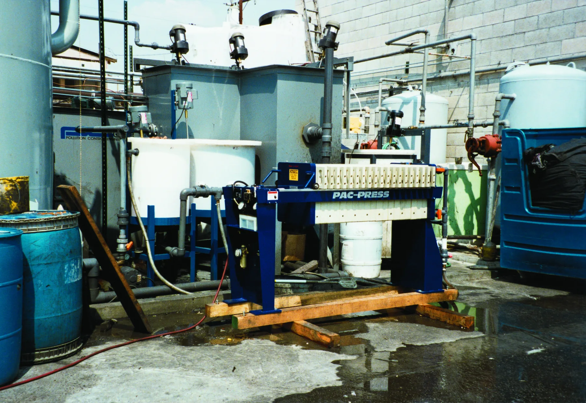
Test representative material and confirm operating conditions before committing to a full-scale project.
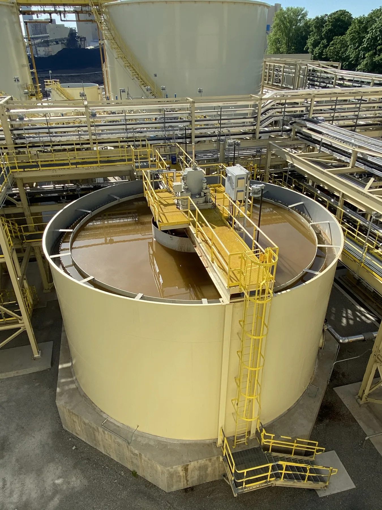
Recover storage capacity by dewatering accumulated sludge before it interrupts plant operations.
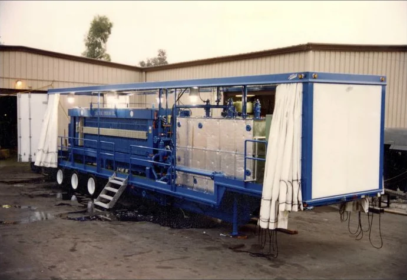
Handle temporary overflow during rainy seasons, harvest runs, or periods of increased production.
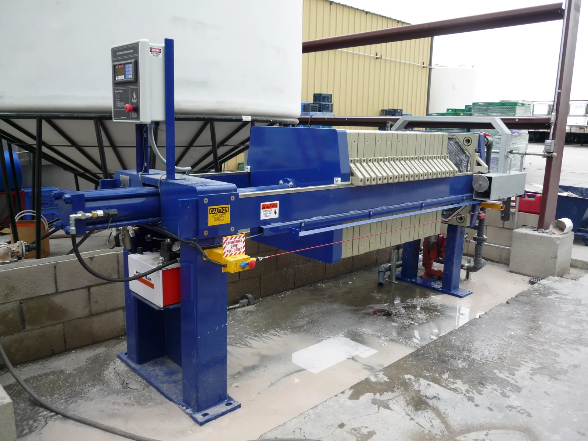
Add temporary dewatering when a municipal treatment plant requires solids removal or improved water clarity.
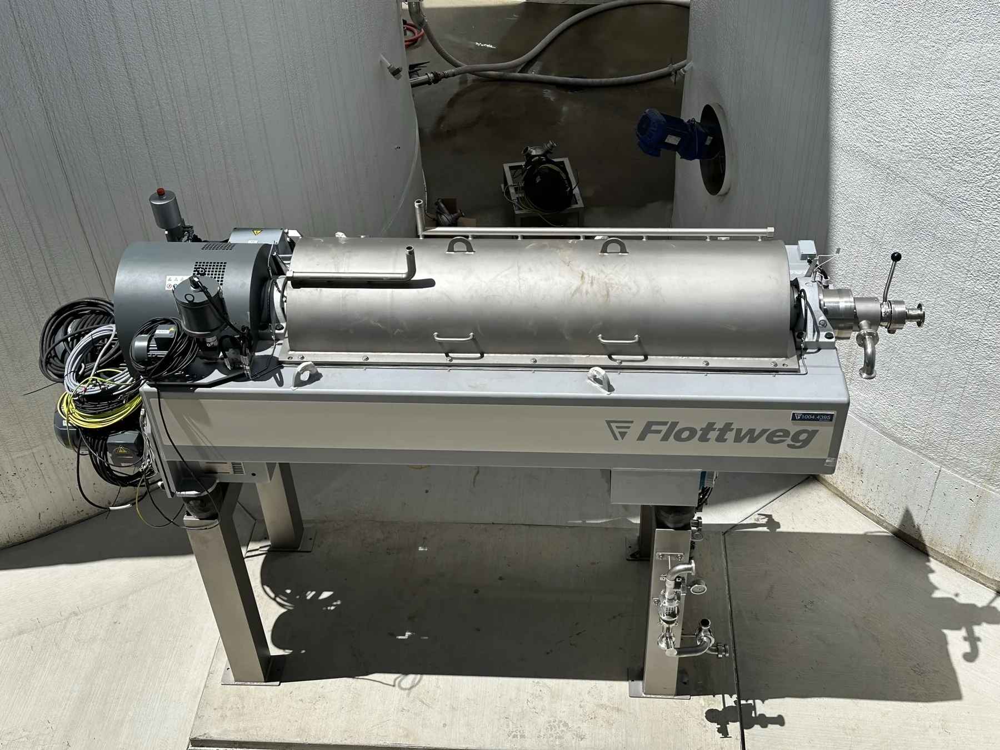
Compare filtration performance when the equipment originally selected is not the right fit for the material or project.
We learn your slurry type, solids content, volume, timeline, and site requirements. The more you share, the better we can size the right system.
PacPress recommends the rental press and support equipment, then confirms availability, freight timing, and site-readiness requirements.
The rental system is supported by the manufacturer throughout your project. Technical help is available when you need it.
PacPress rental filter presses are rated by cubic feet of filtration capacity. Available rental sizes include 5, 10, 15, 20, 30, 75, and 100 cu.ft. Supporting pumps, tanks, hoses, and other equipment may be available depending on the project.
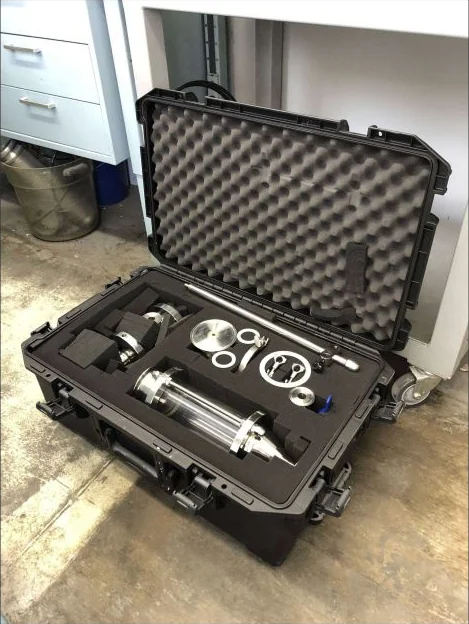
Rental pricing depends on press capacity, rental duration, freight, support equipment, and application requirements. PacPress prepares a project-specific quote after reviewing the job.
| Quote Component | What PacPress Evaluates |
|---|---|
| Press capacity | Filtration volume, cycle goals, and material characteristics. |
| Rental term | Expected project duration and equipment availability. |
| Freight | Project location, site access, delivery, and return transportation. |
| Support equipment | Pumps, tanks, hoses, controls, and connections required by the application. |
| Site requirements | Power, setup, cake handling, and application-specific support. |
The written quote identifies the selected equipment, freight assumptions, rental term, included support, and project-specific costs.
Tell us about your project and a PacPress specialist will help recommend the right rental setup.
PacPress supports the press you rent with factory knowledge, not just rental inventory. You get the same team that builds the machine.
PacPress confirms equipment availability, freight timing, and site-readiness requirements during the quote process.
If a temporary need becomes permanent, PacPress can discuss new-equipment purchase options and confirm applicable terms.
Pumps, tanks, hoses, and setup support may be available depending on your application and site requirements.
Rental systems are made for demanding concrete, mining, wastewater, and industrial applications where performance cannot be compromised.
Delivery timing depends on equipment availability, project location, freight coordination, and site readiness. PacPress confirms the schedule during quoting.
The right size depends on slurry volume, solids content, cycle time, desired dryness, and how many cycles you need per day. PacPress can help size the rental system based on your application.
Cycle count depends on the material, feed pressure, solids loading, filter cloth, and operating schedule. This is one of the main factors used to size a rental press.
If a temporary need becomes permanent, PacPress can discuss purchase options and confirm applicable terms separately.
Most projects need a press, feed pump, hoses, a power source, space for setup, and a method for removing solids after each cycle.
PacPress may provide supporting pumps, tanks, hoses, and related equipment depending on the project requirements.
Share the project address with PacPress so equipment availability, freight, and service can be confirmed for the location.
Common rental applications include concrete washout, mining and aggregates, food and beverage, municipal water, wastewater treatment, environmental remediation, and industrial process water.
Tell us about your project and our team will help you choose the right rental setup, size, and support equipment.
714-982-5600sales@pacpress.com
1215 Fee Ana St., Anaheim, CA 92807